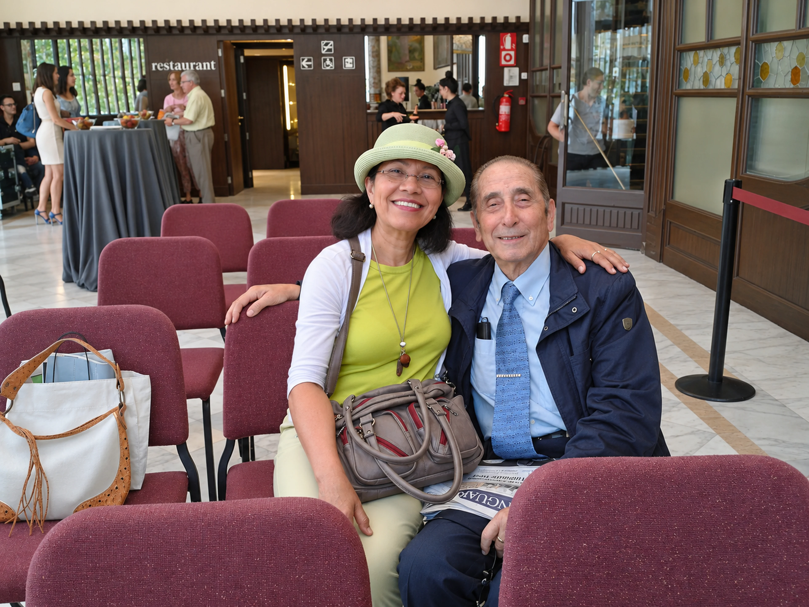
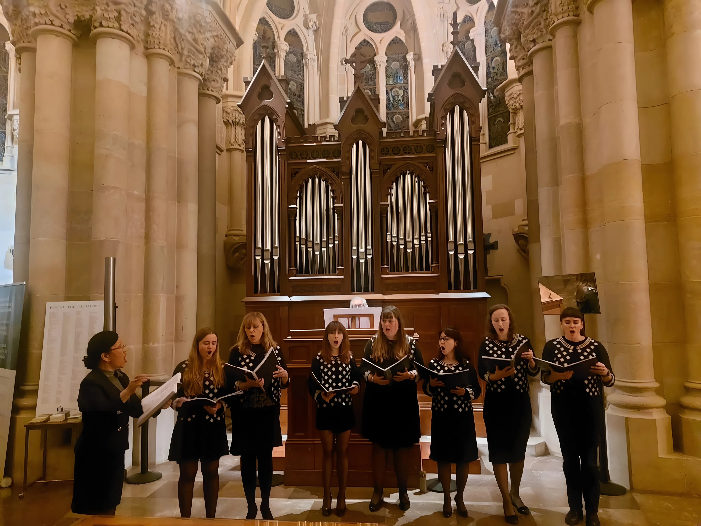
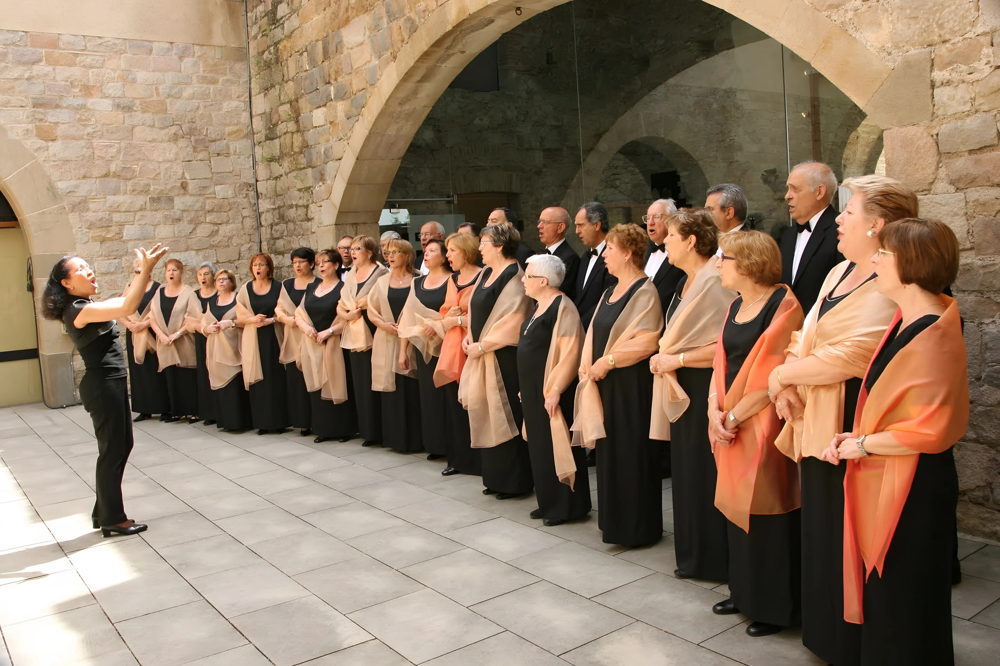
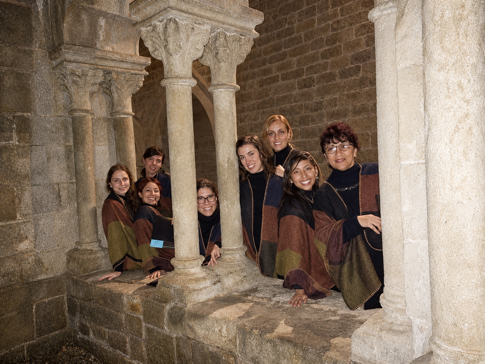

Coral Esperit Cantaire
Su primera coral en Barcelona. El organista y pianista Francesc Busquets, amigo y compañero de muchas actividades musicales, la acompañó al órgano en numerosas ocasiones.

Dirección coral, conciertos y jurado
Desde 1999 Carmen lleva su técnica vocal a los coros que dirige, a los escenarios donde canta y a las mesas de jurado de festivales internacionales.
«La dirección coral, una vez más, vuelve a mostrarme sus mejores lados: es noble y agradecida.»Carmen Moreno · 2012
Sus coros
Carmen vocaliza al coro media hora antes de cada ensayo y de cada concierto, observa a cada cantante y corrige al momento. Para ella, la clave de un coro está en su técnica vocal, no en la dificultad de las obras.

Su primera coral en Barcelona. El organista y pianista Francesc Busquets, amigo y compañero de muchas actividades musicales, la acompañó al órgano en numerosas ocasiones.

«Una de las mejores experiencias que he vivido en la dirección coral». Con Carmen preparó Carmina Burana para su 25 aniversario, hizo giras por Asturias y Galicia, y su voz se ha oído en Italia, Polonia, Austria, el Vaticano y Andorra.

Grupo de cámara femenino creado por Carmen para interpretar música tradicional de América, sobre todo del Sur, y música antigua. Ensaya en la Cripta de la Sagrada Familia y reúne voces de Japón, Ucrania, Colombia, Venezuela, Polonia, Bulgaria, Chile, México y Alemania.
Cantoría Re-Quinto
Carmen eligió el nombre por un instrumento: el requinto, presente en casi todos los países de Sudamérica. Y también porque, al pronunciarlo, lleva «al quinto re», un sonido muy preciado por cualquier solista.
El grupo debutó el 30 de noviembre de 2014 en Sant Pau del Camp, la iglesia románica más antigua de Barcelona, con Monteverdi, canto gregoriano y el Cancionero de Upsala. Desde entonces ha recuperado barroco latinoamericano, cantado en náhuatl y quechua, y ha preparado el Oratorio de Noël de Saint-Saëns.
Jurado internacional
Desde 2008 Carmen ha sido invitada como jurado en festivales corales de cuatro países, junto a compositores y directores como Romuald Twardowski, Andrea Angelini y Bernhard Gfrerer.
Origen: Cumaná (Venezuela) · «Venezuela será siempre mi cielo»
La base del éxito de un coro no radica en las dificultades de las obras seleccionadas, sino en su técnica vocal.Carmen Moreno · jurado en Varsovia, 2016
La soprano
Soprano lírico-ligera, Carmen ha cantado Händel, Mozart, Puccini, Dvořák, Villa-Lobos, Schumann y canción tradicional catalana con arpa, piano y violonchelo.
La «Cantilena» de las Bachianas Brasileiras n.º 5 de Villa-Lobos.
Recital «Sol y Luna»: García Abril, Rusalka y la Reina de la Noche.
«D'Istanbul a Barcelona, antología lírica», con el barítono Suat Arikan y el tenor Félix Merino.
Con la arpista Mercè Guilera: Händel, Puccini y tradicionales catalanas, también en el festival Gaudilart.
Recital íntimo en el Monasterio y concierto en la Sala Modernista Pau Gil con el pianista Lluís Avendaño.
Widmung de Schumann por sus 85 años y, en 2020, el estreno sorpresa de un Ave María que él mismo había compuesto.
Galería
Fotografías del archivo personal de Carmen. Pulsa cualquiera para ampliarla y usa las flechas del teclado para recorrerlas.

Tu primera clase
Cuéntale a Carmen qué quieres cantar y qué te cuesta. Te propondrá un punto de partida y un horario que encaje contigo, online o en Barcelona.